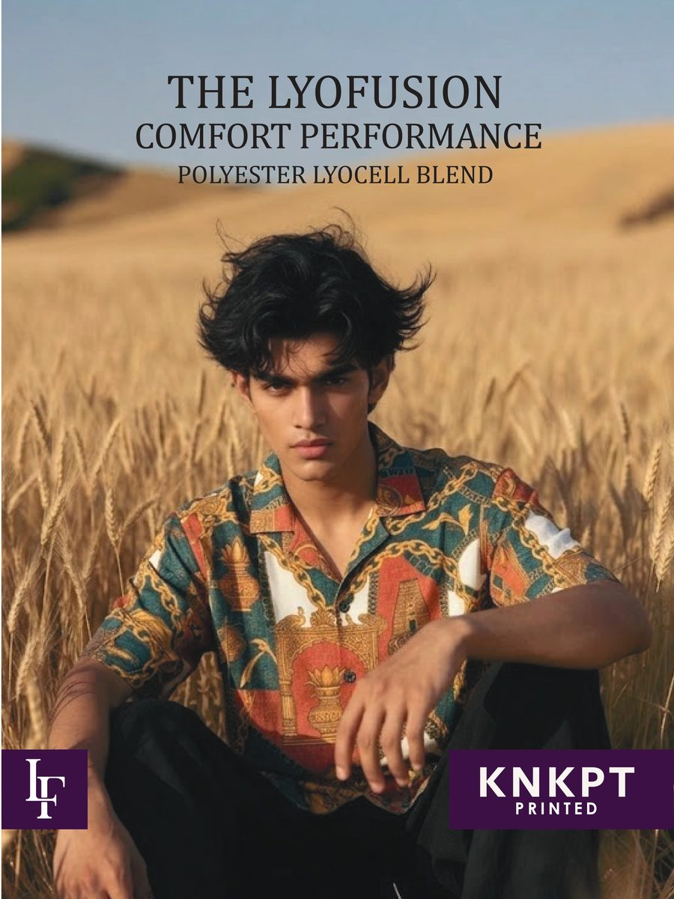
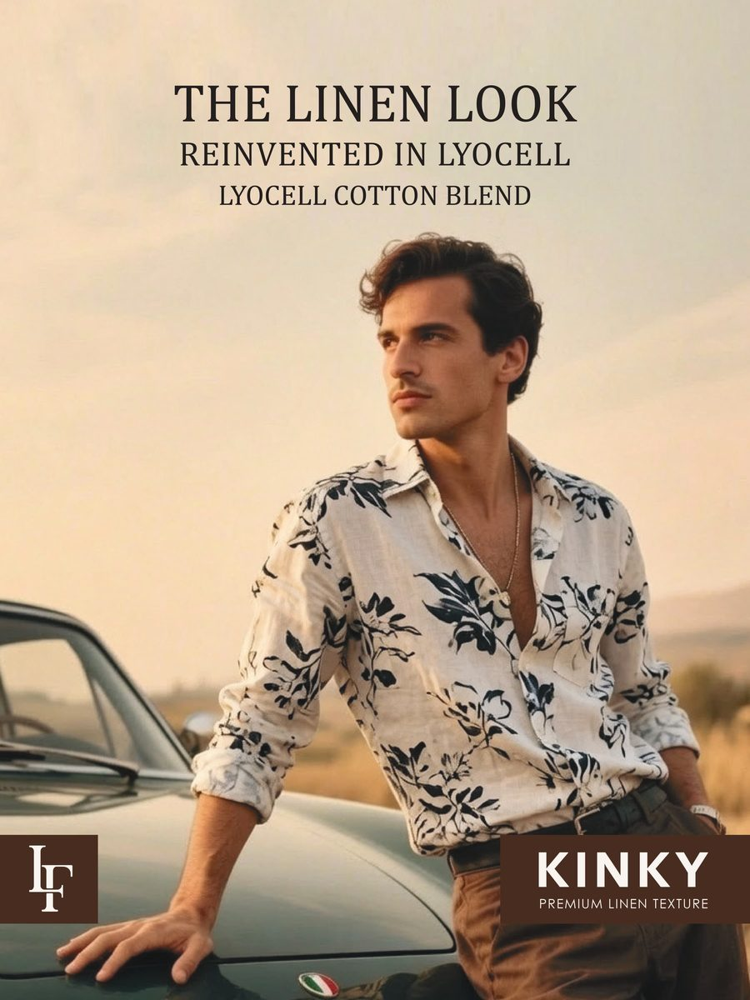
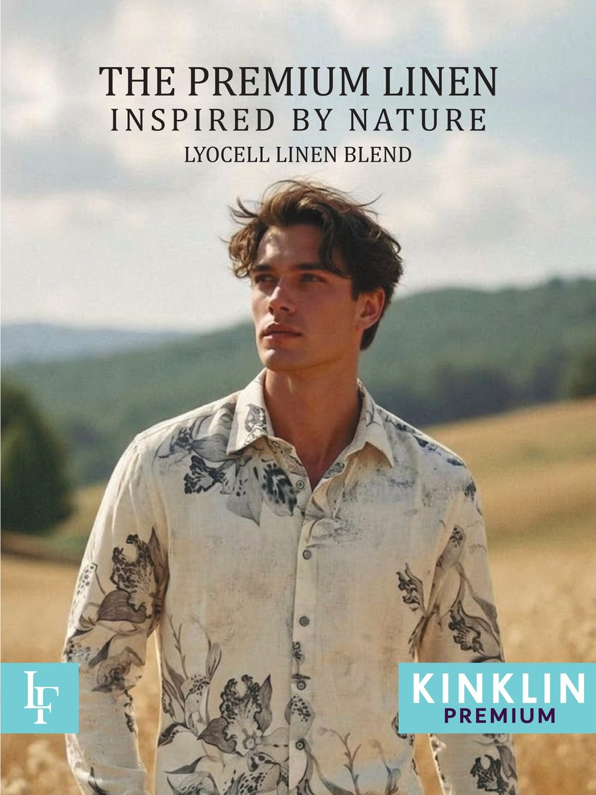
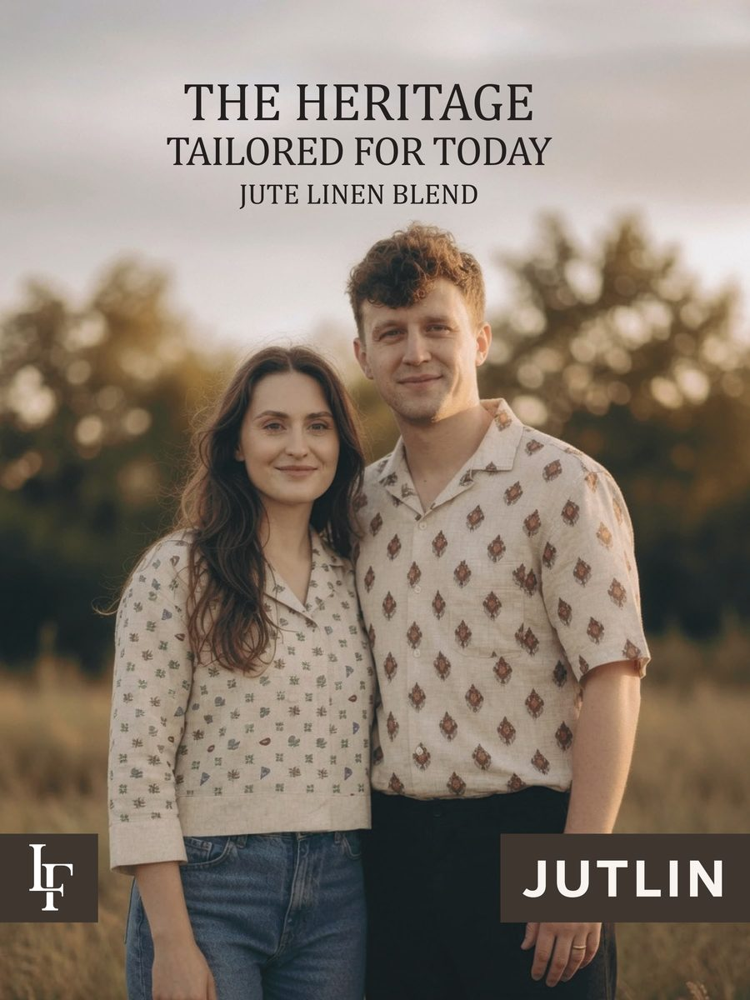
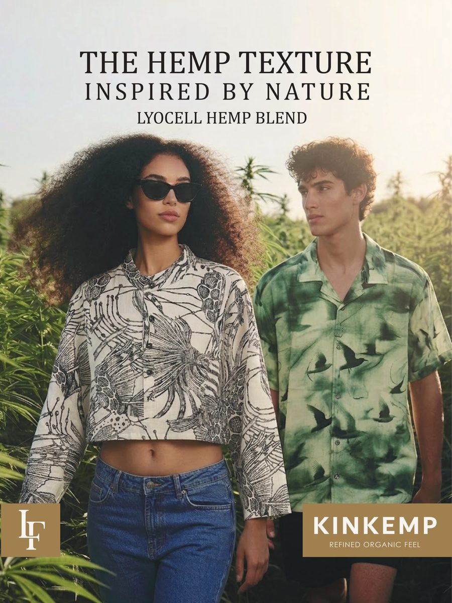
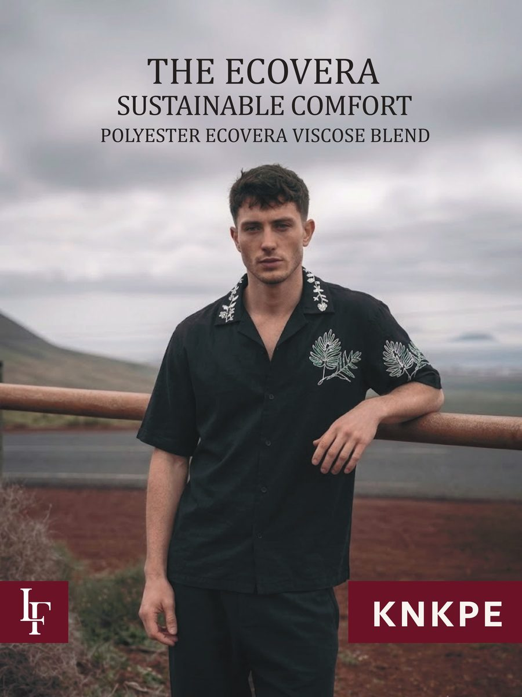
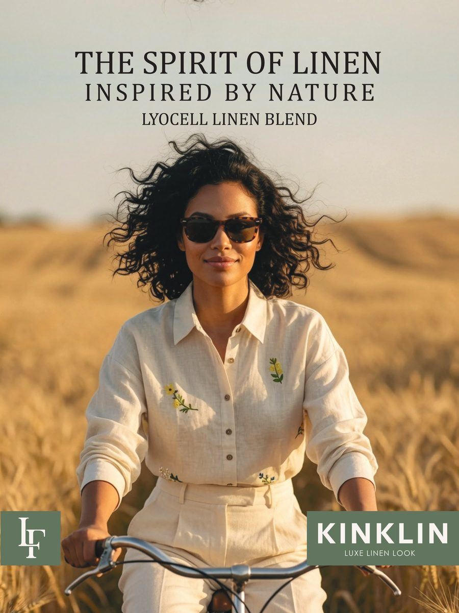

From sustainable fabric development for Laissez Faire to hand-painted artwork for DAI — a look at how the work changes shape from client to client.
Seven sustainable fabric blends, developed for a trade-show debut.

Comfort performance in a polyester–lyocell blend, built for print.

A linen look reinvented in a lyocell–cotton blend, in premium texture.

Inspired by nature, a lyocell–linen blend with a premium hand-feel.

Tailored for today, a jute–linen blend rooted in traditional textile craft.

A refined, organic feel from a lyocell–hemp blend inspired by nature.

Sustainable comfort from a polyester–ecovera viscose blend.

A luxe linen look in lyocell–linen, styled for warm-weather ease.
Fabric selection, naming, and product positioning across the full Kink Collection range.
Hero positioning copy, a trade-show deck, mailer, and campaign photography direction.
A complete, on-brand system the client could carry from the show floor to retail.